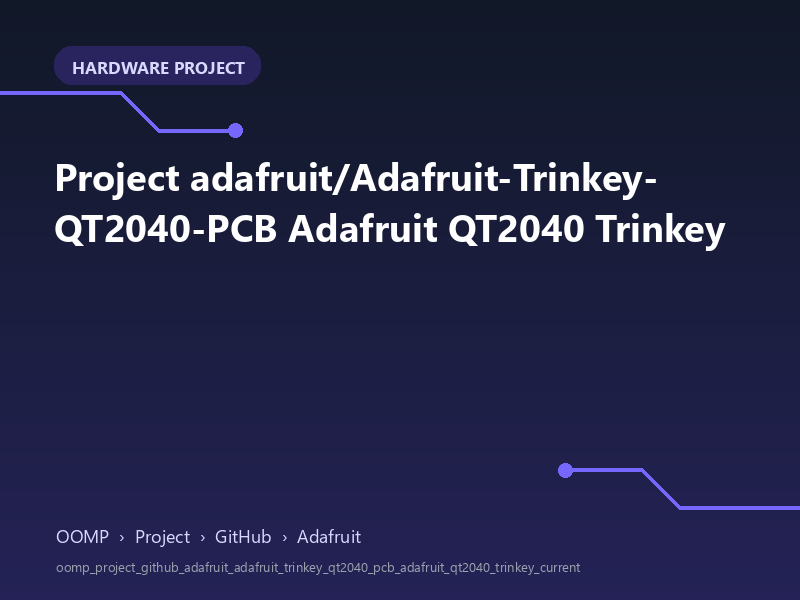

OOMP board explorer
Project adafruit/Adafruit-Trinkey-QT2040-PCB Adafruit QT2040 Trinkey
A concise OOMP hardware project organised under OOMP › Project › GitHub › Adafruit.

Interactive board geometry is not available yet.
This project is indexed and ready to browse; its source board still needs to pass through the OOMP board-processing pipeline.
This project is indexed and ready to browse; its source board still needs to pass through the OOMP board-processing pipeline.
oomp_project_github_adafruit_adafruit_trinkey_qt2040_pcb_adafruit_qt2040_trinkey_current